LAN Party Infrastructure Review
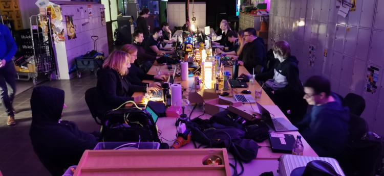
Moin Moin,
über das vergangene Wochenende gab es bei uns in Kooperation mit der Informatik Fachschaft der Uni Oldenburg wieder eine LAN Party für die Erstsemester.
Spoiler vorweg; es gab zwischen 18:00 Uhr und 21:00 am Freitag Probleme mit unserem ISP (natürlich zum Beginn der LAN Party, Murphy lässt grüßen). Deswegen gibt es dort eine Lücke in der Auswertung. Ab 21:00 war das Problem gefixt und wir haben brauchbare Daten.
Die grundlegende Infrastruktur sieht dabei wie folgt aus.

Wir betreiben einen Steam LAN Cache im Netzwerk um Downloadanfragen nach Spielen/Updates oder dergleichen nicht nur effizient mit Wirespeed bedienen zu können, sondern entsprechend auch die begrenzte Internetkapazität freizuhalten für Anfragen welche nicht zwischengespeichert werden können.
Alle Access Switche sind mit 10G am Core angebunden. Der LAN-Cache ist mit 40G am Core angebunden.
Bei der Betrachtung des LAN-Cache würde man ein asymmetrisches Trafficverhalten erwarten. Die Idee des Caches ist es Content vorzuhalten und bei erneuter Anfrage direkt ausliefern zu können. Also ist hier in Relation zueinander mehr“Out“ -going als “In”-coming wünschenswert.
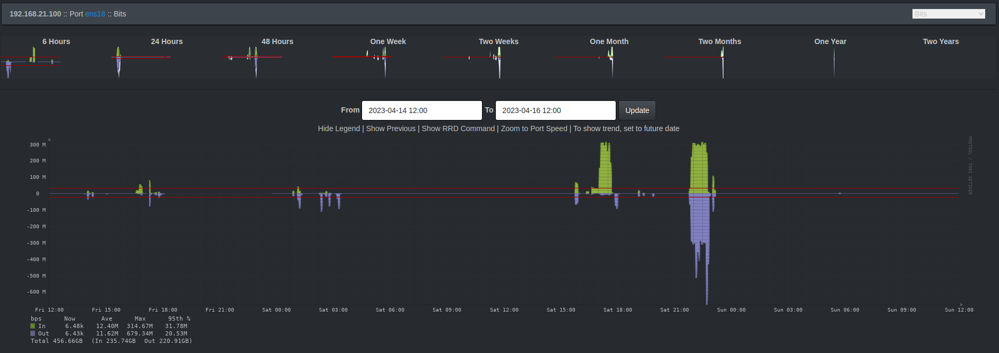
Das ist auch genau so eingetreten. Die Ausnahme am Samstagnachmittag war der händisch getriggerte Steam Prefill unsererseits.
Die Trafficprofile der Switche auf der Freifläche lesen sich wie folgt.
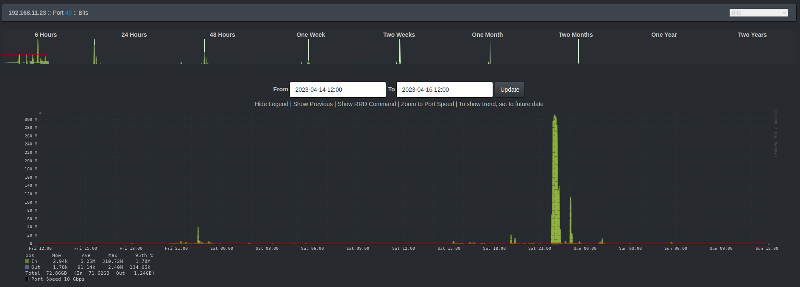
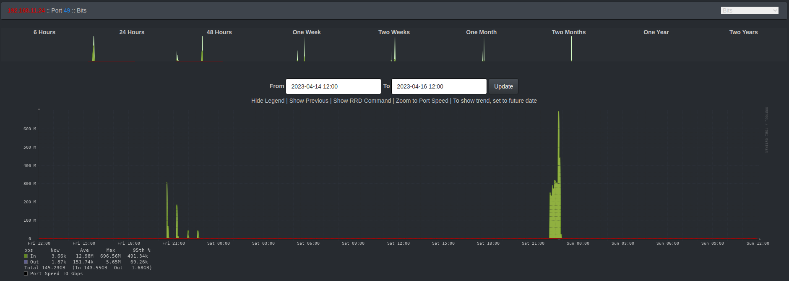
Die Gesamtauslastung Internet sieht wie folgt aus.
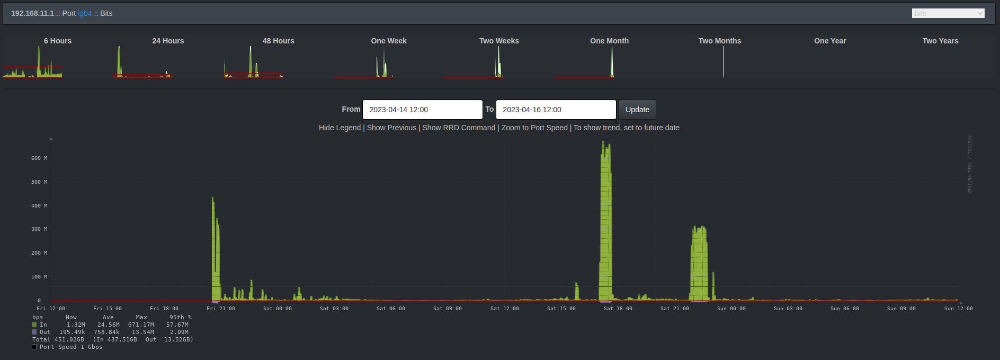
Nüchtern und ehrlich betrachtet haben wir weder den LAN-Cache noch die 10G Anbindung an den Access Switchen gebraucht. Aber das hat uns noch nie davon abgehalten coolen Krams mit Technik zu machen! ;)
Für WLAN Enthuasiasten dürften folgende Statistiken interessant sein.
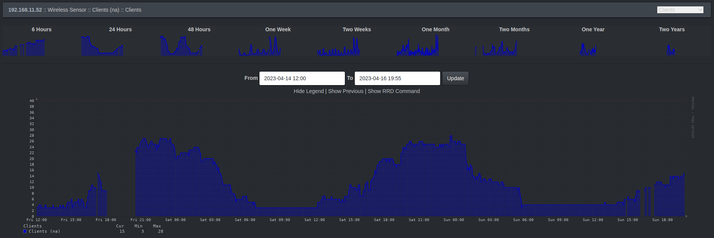
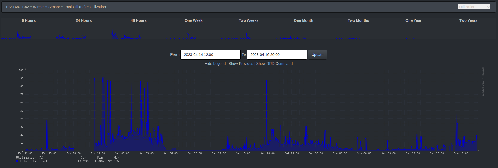
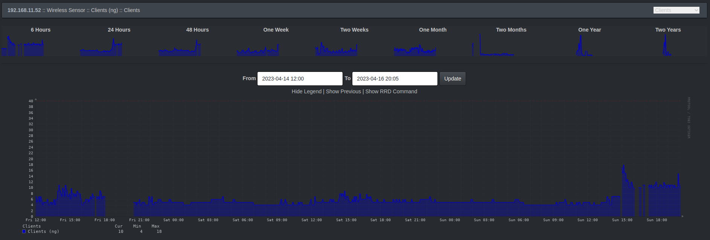
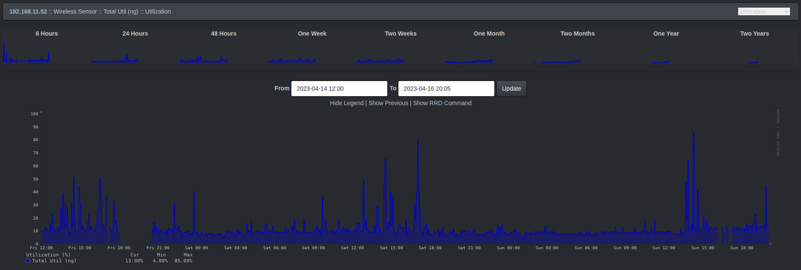
Der Access Point in der Lounge hat sichtbar mit Beginn der LAN Party immer mehr Clients aufgenommen. Es freut uns, dass hier primär das 5 GHz aktiv ist und nur wenig bis keine Geräte sich in das legacy 2.4 GHz Band verbinden.
Die Sache mit dem ISP Problem
Wie bereits erwähnt hatten wir zu Beginn der LAN Party um ca. 18:00 Uhr Probleme mit der Internetleitung. Wir sind jetzt (Sonntagabend) mit der Diagnostik etwas weiter und glauben das Problem identifiziert, wenn auch noch nicht gelöst, zu haben.
Während der LAN Party hatten wir plötzlich mit starken Paketverlusten ins Internet zu kämpfen. Da wir kurzzeitig einen alternativen ISP Uplink organisieren konnten, war ab 21:00 Uhr das Problem erst einmal umgangen. Ab dann konnten wir uns auf die Suche nach dem eigentlichen Problem begeben.
Nach bisheriger Diagnostik macht das Modem vom Provider schlapp, sobald es mit viel Internettraffic umgehen muss und hat mit stark erhöhten Latenzen zu kämpfen.
Unser Test sah vor, künstlich erzeugten Traffic durch Steam Prefill des LAN-Cache zu erzeugen. Während unser eigenes ISP Modem dies nicht gut verkraftete, deutliche Latenzen verzeichnete und sogar im Downloadspeed über Zeit merklich nach lies, war die Alternativleitung davon total unbeeindruckt und lieferte 500 Mbit über den gesamten Testzeitraum ohne erhöhte Latenzen.
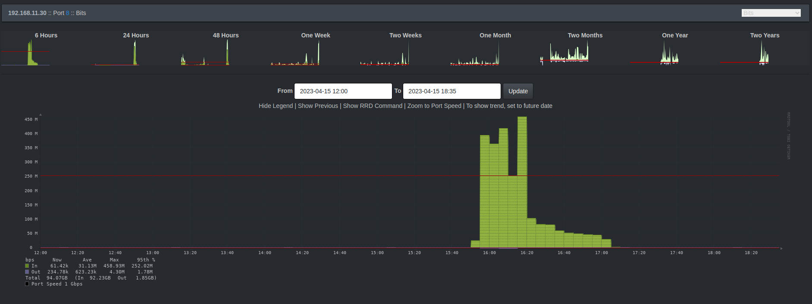
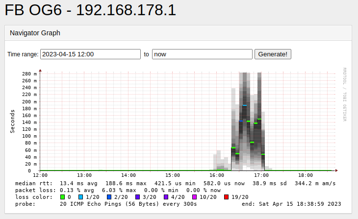
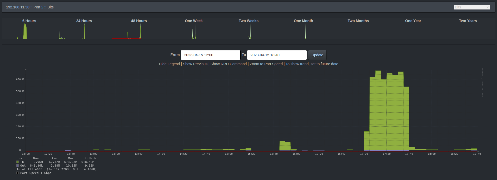
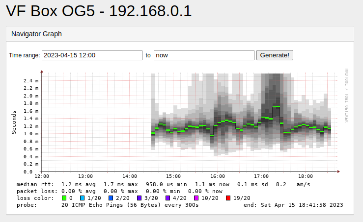
Jetzt heisst es, das defekte Modem auszutauschen.
Wir bedanken uns bei allen Gästen, Teilnehmern, Helfern, insbesondere der Person die kurzzeitig für alternativen Internetuplink gesorgt hat. Wir hoffen, ihr hattet alle Spaß. Wir hatten ihn. Und haben mal wieder eine Menge gelernt. Außerdem freuen wir uns auf das nächste Event im Oktober.
Nerdige Grüße, Mainframe Oldenburg
Benutzte Tools
- Intermapper
- LibreNMS
- SmokePing